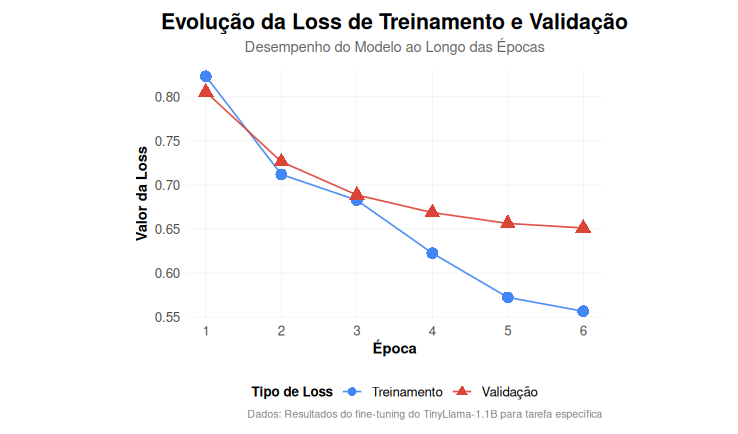
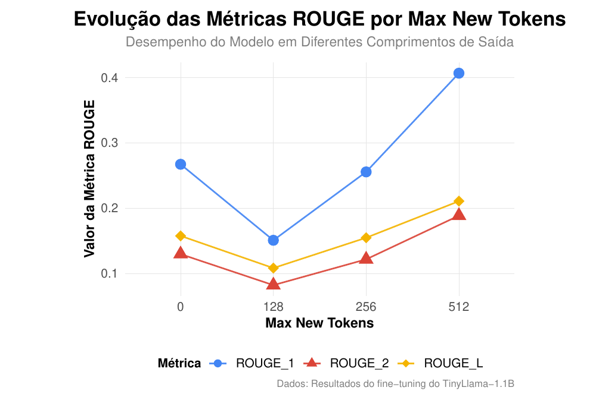

Fine-tuning do TinyLlama 1.1B para Análise de Vulnerabilidades em Cibersegurança
Explorando o potencial de Large Language Models compactos para detecção e análise automatizada de vulnerabilidades
Este trabalho investiga a aplicação de Small Language Models (SLMs) em Inteligência Artificial Explicável (XAI) para Cibersegurança. O objetivo principal é desenvolver e validar um pipeline de fine-tuning para o modelo TinyLlama-1.1B, visando a interpretação automatizada de logs de segurança com baixo custo computacional.
A dependência de alto poder computacional limita o uso de Large Language Models (LLMs) em ambientes locais e críticos. Modelos compactos oferecem uma alternativa viável para preservar a privacidade dos dados e reduzir a latência, permitindo que analistas de segurança obtenham explicações técnicas detalhadas sem depender de nuvens externas.
TinyLlama 1.1B
Modelo compacto baseado na arquitetura Llama, com 1.1 bilhão de parâmetros, ideal para fine-tuning em hardware limitado mantendo performance competitiva.
Dataset: Logs Snort + Gemini Insights
Dataset híbrido composto por logs reais do IDS Snort enriquecidos com interpretações de ameaças geradas sinteticamente pela API Gemini, criando pares de instrução-resposta de alta qualidade.
Técnica: Supervised Fine-Tuning (SFT)
Utilização de SFT para especializar o modelo na tarefa de XAI. O Gemini atuou como "professor" para gerar exemplos de treinamento, permitindo que o TinyLlama aprendesse a articular explicações técnicas.
Ambiente: Google Colab
Framework: PyTorch
Experimentos conduzidos em ambiente controlado na nuvem, garantindo reprodutibilidade e acesso a recursos de GPU para o processo de fine-tuning.
O modelo foi treinado para seguir rigorosamente este formato de raciocínio:


Os gráficos acima ilustram a estabilidade do treinamento (esquerda) e a qualidade das explicações geradas (direita). Observa-se que o modelo evita overfitting mantendo a loss de validação controlada, enquanto atinge seu pico de performance ROUGE com janelas de 512 tokens.
Comparação direta entre o output gerado pelo TinyLlama 1.1B (Fine-tuned) e a Referência (Teacher).
Ameaça Provável:
SQL Injection/SQL Inspeção. O alerta sugere que um atacante está tentando explorar uma falha na aplicação para inserir texto malicioso.
Ações Recomendadas:
Ameaça Provável:
Tentativa de SQL Injection. O servidor está respondendo com erros SQL (mysql_query) em páginas HTTP 200, indicando falha no tratamento de input.
Ações Recomendadas:
Learning Rate:
2e-4
Batch Size:
8
Max Sequence Length:
2048
Epochs:
10 (Best: 6)
Steps/Epoch:
141
Optimizer:
Paged AdamW 32bit
Warmup Ratio:
0.03
Weight Decay:
0.01
| Epoch | Training Loss | Validation Loss | Status |
|---|---|---|---|
| 1 | 0.823400 | 0.805531 | Initializing |
| 2 | 0.711900 | 0.726318 | Learning |
| 4 | 0.622500 | 0.668585 | Improving |
| 6 (Best) | 0.556600 | 0.651145 | Optimal Point |
| 8 | 0.491900 | 0.653825 | Overfitting Start |
| 10 | 0.442100 | 0.676333 | Stopped |
TinyLlama 1.1B
├── Base Model: TinyLlama-1.1B-Chat-v1.0
├── Quantization: 4-bit Normal Float (NF4)
├── Target Modules: q_proj, k_proj, v_proj, o_proj
├── Trainable Params: 4,505,600 (0.41%)
├── LoRA Rank (r): 16
└── LoRA Alpha: 32Temperature:
0.7 (Creativity)
Top-P:
0.95 (Nucleus)
Top-K:
50
transformers
trl
peft
accelerate
bitsandbytes
evaluate
rouge_score
nltk
torch
datasetsLeia o trabalho completo com todos os detalhes da pesquisa, metodologia, experimentos e resultados.
Download PDFAcesse o código-fonte completo, notebooks de treinamento, datasets e documentação técnica.
Ver no GitHubModelo fine-tuned disponível para download e uso imediato através da plataforma Hugging Face.
Ver ModeloDataset curado utilizado para o fine-tuning, incluindo exemplos de vulnerabilidades e análises.
Acessar DatasetSe você utilizar este trabalho em sua pesquisa, por favor cite:
@mastersthesis{tinyllamasec2025,
title={Fine-tuning do TinyLlama 1.1B para Análise de Vulnerabilidades em Cibersegurança},
author={Josean Mário Moreira Rodrigues and Wadson Fernandes Alves},
school={Universidade Federal de Uberlândia (UFU) - FACOM},
address={Uberlândia, MG, Brazil},
year={2025}
}